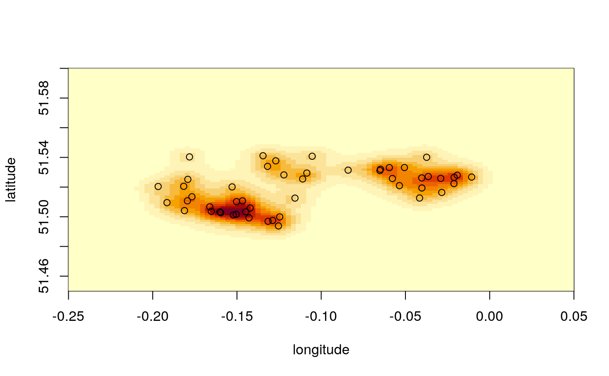

geoSmooth.RdTakes lon/lat coordinates, bins in two dimensions, and smooths using kernel density smoothing. Kernel densities are computed using the fast Fourier transform method, which is many times faster than simple summation when using a large number of points. Each Kernel is student's-t distributed with 3 degrees of freedom, and scaled by the bandwidth lambda. If lambda is set to NULL then the optimal value of lambda is chosen automatically using the leave-one-out maximum likelihood method.
geoSmooth(longitude, latitude, breaks_lon, breaks_lat, lambda = NULL)
| longitude | longitude of input points |
|---|---|
| latitude | latitude of input points |
| breaks_lon | positions of longitude breaks |
| breaks_lat | positions of latitude breaks |
| lambda | bandwidth to use in posterior smoothing. If NULL then optimal bandwidth is chosen automatically by maximum-likelihood. |
Barnard, Etienne. "Maximum leave-one-out likelihood for kernel density estimation." Proceedings of the Twenty-First Annual Symposium of the Pattern Recognition Association of South Africa. 2010.
# create smooth surface based on raw LondonExample_crimes breaks_lon <- seq(-0.25,0.05,l=101) breaks_lat <- seq(51.45,51.6,l=101) m <- geoSmooth(LondonExample_crimes$longitude, LondonExample_crimes$latitude, breaks_lon, breaks_lat)#> Smoothing posterior surface.............. #> maximum likelihood lambda = 0.5# produce image plot of surface and overlay points image(breaks_lon, breaks_lat, t(m), xlab="longitude", ylab="latitude")